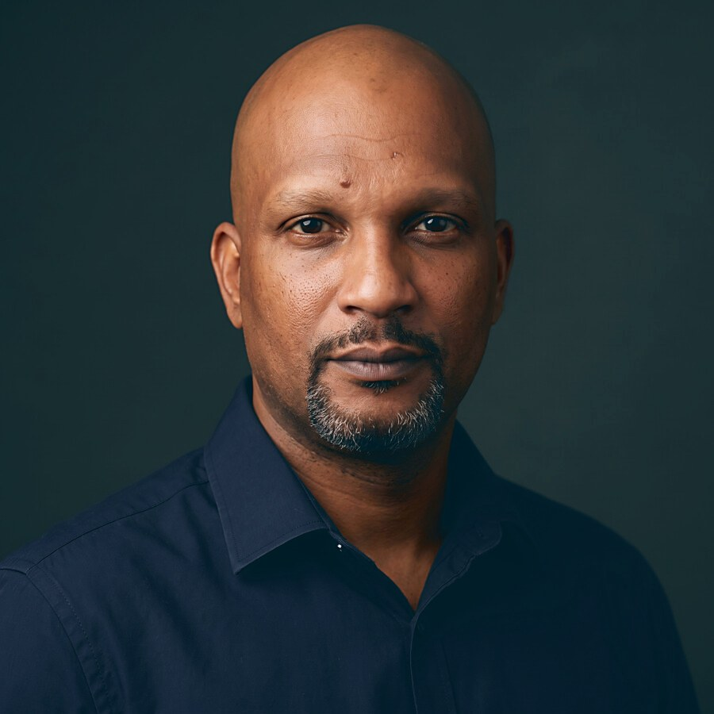

CIA · Conseil, Ingénierie & Assistance
Réalisez des projetsqui aboutissent !
Cabinet de conseil et d’ingénierie de projets installé à Cayenne. Nous accompagnons les collectivités, les entreprises et les investisseurs étrangers de l’étude qui fonde le projet jusqu’à sa mise en œuvre.
Trois portes d’entrée
Collectivités
Assistance à maîtrise d’ouvrage, montage de financements, ingénierie de la commande publique. Nous instruisons vos dossiers avec vos services, et nous les défendons devant les financeurs.
Nos expertises →Entreprises
Études de faisabilité, prévisionnels, structuration d’investissement et fiscalité d’outre-mer. Des chiffres sourcés et datés, pas des promesses.
Nos expertises →Investisseurs étrangers
Vous cherchez une base européenne en Amérique du Sud. Diagnostic, implantation coordonnée, représentation permanente.
CIA Gateway →
Pourquoi nous
Avant de conseiller les collectivités, nous les avons dirigées.
Plus de quinze ans de responsabilités publiques et privées, dont neuf à la direction générale de trois communes guyanaises — Maripasoula, Iracoubo, puis Matoury et ses 780 agents. Richard JOIGNY connaît le budget d’une commune pour l’avoir construit, la commande publique pour l’avoir passée, et le contrôle de légalité pour l’avoir subi.
C’est ce qui sépare un conseil qui tient d’un conseil qui se contente d’avoir raison.
Le groupe
Nous ne conseillons pas la Guyane depuis Paris : nous y entreprenons.
CIA est le cabinet d’ingénierie d’un groupe qui exploite sur le territoire : sécurité privée et télésurveillance, collecte et logistique, formation professionnelle, énergie, agro-transformation. Ce que nous vous recommandons, nous l’avons d’abord éprouvé sur nos propres chantiers.
D’où une chose rare dans le conseil : nous savons le délai qu’une administration met vraiment à répondre, le coût qu’une embauche atteint vraiment charges comprises, et quels dispositifs fiscaux n’existent plus alors qu’ils circulent encore dans les présentations commerciales.
Ils nous font travailler
Des collectivités qui nous confient ce qui compte.
Commune de Régina
Eau potable et assainissement, marchés de travaux, Maison France Services, urbanisme, état civil.
Communauté de Communes de l’Est Guyanais
Assistance à maîtrise d’ouvrage, marchés publics, suivi financier et régularisations.
Ville de Cayenne
Organisation des services, dialogue social, temps de travail, situations individuelles.
Commune de Matoury
Rapport d’orientation budgétaire, équipements publics, conventions.
Commune d’Iracoubo
Assistance technique et préparation budgétaire.
Commune de Macouria
Régime indemnitaire et plafonds de rémunération.
Missions conduites pour des personnes publiques. Les entreprises privées que nous accompagnons ne sont pas citées : leurs dossiers sont confidentiels, et ils le restent.
CIA Gateway
L’Europe commence en Amazonie.
La Guyane française est le seul territoire d’Amérique du Sud où une entreprise opère en droit français, facture en euros et vend au marché unique européen. Nous accompagnons les entreprises étrangères du diagnostic jusqu’à l’immatriculation, puis dans la durée.
Vos contrats en droit français, vos actifs en euros, vos comptes dans le système bancaire européen. L’antidote à la volatilité monétaire et à l’insécurité juridique.
Le marché unique européen et ses 450 millions de consommateurs. Normes CE, origine Union européenne : la seule Amazonie qui produit « en Europe ».
Trente minutes suffisent à savoir si votre projet tient.
Le premier entretien est confidentiel, sans engagement et sans facturation. Nous instruisons un nombre limité de dossiers par trimestre.